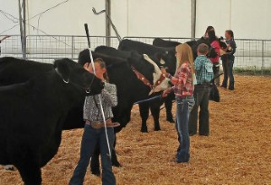

Fish Haven Idaho
5 Day Forecast
Events Coming Up
Fair Will Continue for Youth

The Bear Lake Junior Livestock Committee and 4-H Personnel met Thursday evening to make plans to move forward with a reduced version of the fair.
The County Commissioners realize the kids have put in countless hours raising and working with their animals to be ready for the fair
and feel we can safely have all the 4-H and FFA activities.
The fair is a culminating event that marks the end of countless hours of hard work,
effort, and learning. 4-H and FFA livestock projects effectively help youth develop critical life skills such as accepting responsibility,
getting along with others, setting goals, decision making, and interpersonal skills.
Contact Us
Weather Outlet123 Baby Shark Rd.
Preston, Id 83263
📱1-208-Out-let1
weatheroutlet1@outlook.com